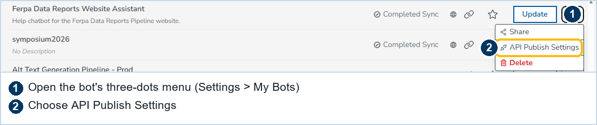
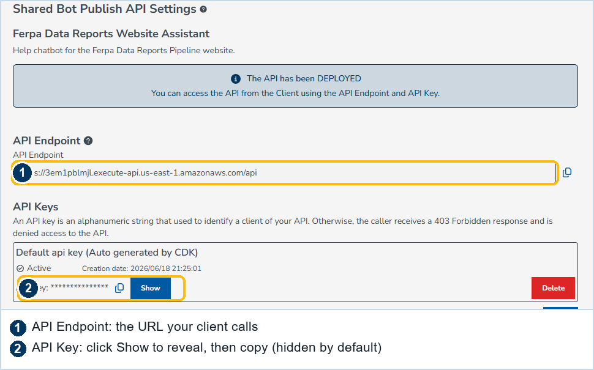
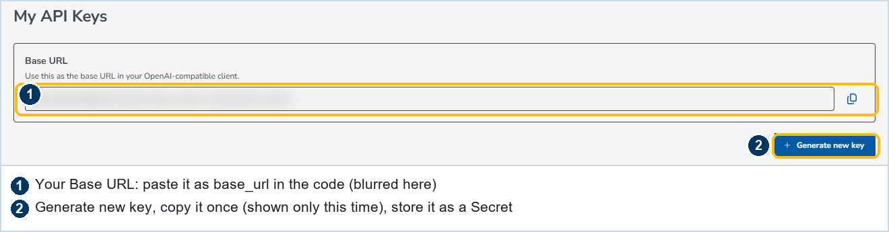

Home / Developer track / At UCSB
For people at UCSB
The UCSB LLM Sandbox
LLM Sandbox is the gateway UCSB runs and vets, an OpenAI-compatible endpoint in front of cloud models, metered in tokens rather than dollars. This page is only what is different at UCSB: how to get a key, and the facts we checked against the live gateway. The call itself is the same as any gateway, so the API, snippets, and error fixes live on the gateway page.
Credentials
Two ways to get a key #
Everything needs two values: a base URL and an API key. There is no cost; this is the campus gateway. There are two routes to them, for two different jobs.
Publish a bot and use its API (available now) #
Build a bot in LLM Sandbox (llmsandbox.cloud.ucsb.edu), give it instructions and, if you want, knowledge. Then open Settings → My Bots, click the bot's three-dots menu, and choose API Publish Settings.

Publishing gives you an API Endpoint and an API Key on one screen, each with a copy button. This route is open to anyone with LLM Sandbox access, and it is what powers the "Ask the assistant" widget on this site. Note that a bot API talks to the bot you configured, so it has its own shape, not the raw Chat Completions call in the snippets. Reach for it when you want a hosted assistant.

Get a direct key from the dev console (preview) #
For the raw, OpenAI-compatible calls the pipeline uses, the developer console at llmdev.cloud.ucsb.edu has the direct keys. Open the menu (top left), then Settings → My API Keys. The page shows your Base URL (it ends in /v1) and a Generate new key button. The key is shown only once, so copy it right away.

Checked against the live gateway, June 2026
Base URL and auth #
We generated a key, ran calls, and revoked it. Here is what is true of the LLM Sandbox /v1 gateway today, so you do not have to rediscover it.
- Base URL ends in
/v1. It is an AWS API Gateway in front of Amazon Bedrock models. - Either auth header works. The key authenticates as
Authorization: Bearer <KEY>(what OpenAI SDKs already send) or asx-api-key: <KEY>. A standard OpenAI client works with no header changes. - The call returns the standard OpenAI shape, with
choices[0].message.contentand ausagetoken count. A short summary runs about 1.3K tokens.
LLM_BASE_URL to your dev-console base URL and LLM_API_KEY to your key.
What you can call
The live model catalog #
Run GET {BASE_URL}/models with your key to list the current ids. As of June 2026 the catalog spans several providers:
| Provider | Model ids |
|---|---|
| Anthropic (Claude) | claude-v4.6-sonnet, claude-v4.6-opus, claude-v4.5-haiku, claude-v3.7-sonnet, claude-v3.5-haiku, claude-v3-opus |
| Amazon (Nova) | amazon-nova-pro, amazon-nova-lite, amazon-nova-micro |
| Meta (Llama) | llama-4-maverick-17b-instruct, llama-4-scout-17b-instruct, llama3-3-70b-instruct |
| Mistral & others | mistral-large-2, mistral-large, mixtral-8x7b-instruct, mistral-7b-instruct, deepseek-r1, qwen3-32b |
| OpenAI-named aliases | gpt-4o, gpt-4-turbo, gpt-4, gpt-3.5-turbo |
For turning a few comments into a short, cited summary, a small model like claude-v4.5-haiku or amazon-nova-lite is the right default. The list grows over time, so read it from /models rather than hard-coding.